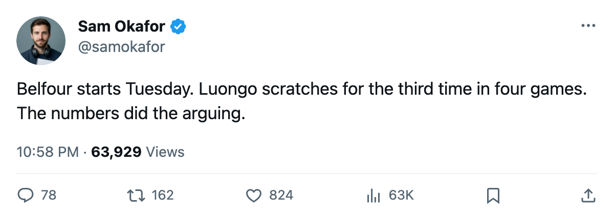

Goalie Room: Belfour in for Tuesday, Luongo a healthy scratch
Belfour takes G1 after Ouellet's shutout Monday; Luongo sits for the third time in four dates
 Sam OkaforLeafs beat reporter · Queen City Telegram
Sam OkaforLeafs beat reporter · Queen City Telegram
Ed Belfour is back as G1. He starts Tuesday night against the  New York Islanders, and
New York Islanders, and  Roberto Luongo95 is a healthy scratch for the third time in four games.
Roberto Luongo95 is a healthy scratch for the third time in four games.
The move follows Maxime Ouellet86's 1-0 overtime win over  Nashville Predators on Monday, the goaltender's second shutout in six days. Belfour had been the healthy scratch since late January. Ouellet stays G2.
Nashville Predators on Monday, the goaltender's second shutout in six days. Belfour had been the healthy scratch since late January. Ouellet stays G2.
Belfour is 19-3-6 with 6 shutouts in 22 games this season. Luongo is 20-21-1 with 1 shutout in 42. The Book has Luongo at 94 and Belfour at 93. On the Development Index, Belfour carries no movement flag this week, but Mikael Tellqvist73 sits at -3, the only Leaf goaltender on the fallers list.
| goaltender | GP | W | L | SO | mpg |
|---|---|---|---|---|---|
| Ed Belfour | 22 | 19 | 3 | 6 | 58.1 |
| Roberto Luongo | 42 | 20 | 21 | 1 | 61.0 |
| Maxime Ouellet | 11 | 4 | 2 | 1 | 36.6 |
| Mikael Tellqvist | 11 | 6 | 4 | 1 | 56.4 |
The opponent
New York Islanders arrives at 24-28-4, 60 points, 4th in the New York Islanders Atlantic division, on a 5-game losing streak. The Islanders scored 185 goals in 60 games and allowed 202.  Rick DiPietro86 sits at +4 on the Bureau's Development Index, the only Islander on a risers list this week.
Rick DiPietro86 sits at +4 on the Bureau's Development Index, the only Islander on a risers list this week.
Toronto leads the season series 1-0, winning 4-0 on the road. The Islanders have four injured players:  Matt Cooke76 (a rib, out through 2005-02-25), plus three others who won't factor here.
Matt Cooke76 (a rib, out through 2005-02-25), plus three others who won't factor here.
Toronto is 43-10-4, 100 points, 31 ahead of  Boston Bruins in the
Boston Bruins in the  Toronto Maple Leafs Northeast. The home record reads 27-5.
Toronto Maple Leafs Northeast. The home record reads 27-5.
Luongo's date with Florida
Roberto Luongo meets  Florida Panthers on 2005-03-03, the Leafs' second meeting with the club that traded him to Toronto on 2005-01-25 and his first facing them in a Leaf sweater.
Florida Panthers on 2005-03-03, the Leafs' second meeting with the club that traded him to Toronto on 2005-01-25 and his first facing them in a Leaf sweater.  David Aebischer89 returns to Toronto that same night, going the other direction in the January deal.
David Aebischer89 returns to Toronto that same night, going the other direction in the January deal.
Tuesday's game is the first of a five-game homestand that includes  Detroit Red Wings on 2005-02-27 and
Detroit Red Wings on 2005-02-27 and  Carolina Hurricanes on 2005-03-01, before two divisional dates close the week.
Carolina Hurricanes on 2005-03-01, before two divisional dates close the week.
